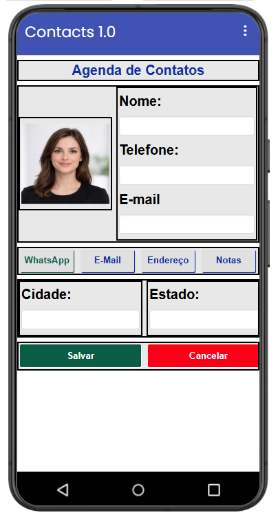
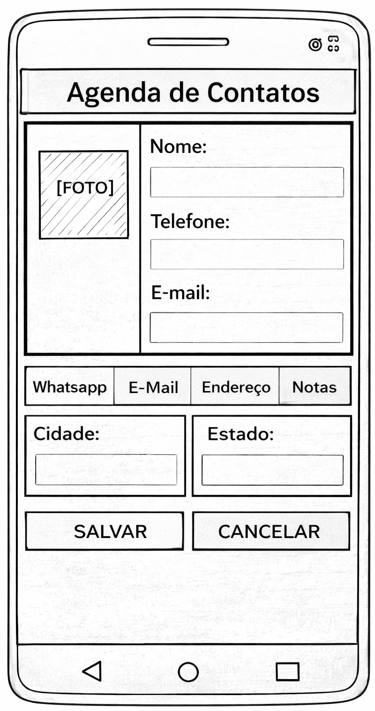
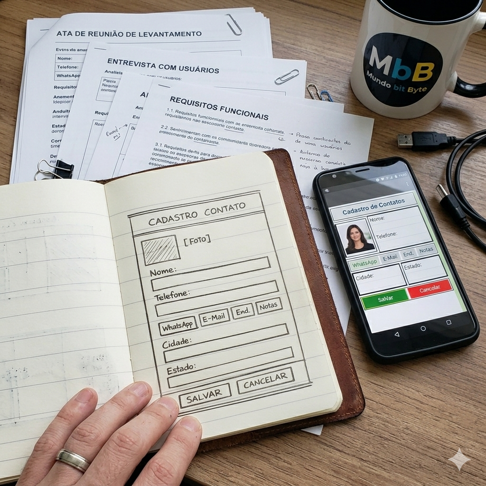
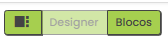
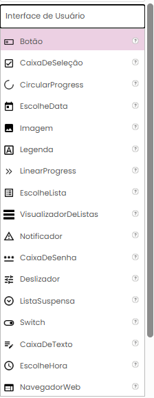
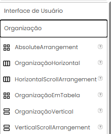
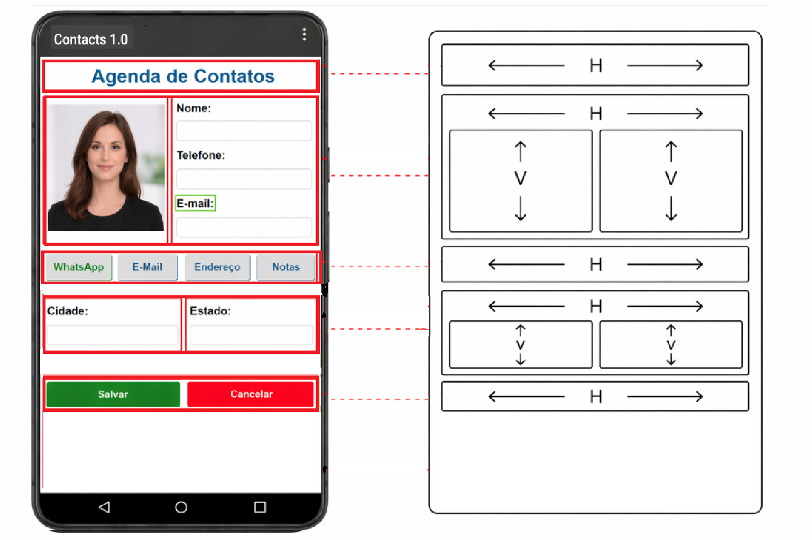
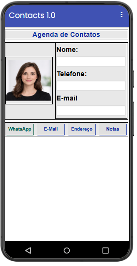

O que é um app?
Um aplicativo é um software criado para rodar em dispositivos móveis. Ele possui telas, comandos, dados e uma finalidade.
Neste tutorial, vamos estudar os fundamentos da programação mobile e construir, passo a passo, a interface de um aplicativo de agenda de contatos usando o App Inventor.
A primeira versão do projeto será focada na construção visual da interface, utilizando a aba Designer do App Inventor.

Antes de construir um aplicativo, é preciso entender o que ele é e por que ele existe.
Um aplicativo é um software criado para rodar em dispositivos móveis. Ele possui telas, comandos, dados e uma finalidade.
Aplicativos existem para resolver problemas, facilitar tarefas e atender necessidades de pessoas, empresas e serviços.
O usuário utiliza o aplicativo. O desenvolvedor pensa em como o aplicativo será construído e como cada etapa funcionará.
Ao criar um app, não basta pensar na aparência. É preciso entender o caminho: telas, ações, dados e resultados.
Um aplicativo combina interface visual, lógica de funcionamento e dados que podem ser digitados, processados, salvos ou enviados.
Escolha um aplicativo que você utiliza no dia a dia e responda:
Todo aplicativo começa com um problema que precisa ser compreendido.
Uma agenda de contatos em papel pode funcionar, mas apresenta limitações: dificuldade para alterar dados, localizar contatos, organizar informações e evitar rasuras.
A solução proposta será transformar essa necessidade em um aplicativo simples de agenda de contatos.
Conversar com o usuário para entender o que o aplicativo precisa fazer.
Desenhar a interface antes de construir, usando um wireframe.
Montar a tela no Designer e, depois, adicionar comportamento com blocos.


O App Inventor permite construir aplicativos por meio de componentes visuais e blocos.
O Designer monta a interface. Os Blocos programam o comportamento.

Nesta primeira versão, usaremos componentes das áreas Interface de Usuário e Organização.


Antes de montar a tela, precisamos entender como os componentes serão organizados.

A interface é formada por componentes dentro de outros componentes.
Screen1
├─ OrgTopoTitulo
│ └─ LegTitulo
├─ OrgFotoDados
│ ├─ OrgFoto
│ │ └─ ImgFoto
│ └─ OrgDadosPessoais
│ ├─ LegNome
│ ├─ CxTNome
│ ├─ LegTelefone
│ ├─ CxTTelefone
│ ├─ LegEmail
│ └─ CxTEmail
├─ OrgBotoes1
│ ├─ btWhatsApp
│ ├─ btEmail
│ ├─ btEndereco
│ └─ btNotas
├─ OrgCidadeEstado
│ ├─ OrgCidade
│ │ ├─ LegCidade
│ │ └─ CxTCidade
│ └─ OrgEstado
│ ├─ LegEstado
│ └─ CxTEstado
└─ OrgBotoes2
├─ btSalvar
└─ btCancelarA tela será construída por etapas. Em cada etapa, veja o que inserir, quais propriedades alterar e qual será o resultado.
A tela inicial aparece vazia, com o título padrão Screen1.
Antes de inserir os componentes, configure a tela principal do aplicativo.
Agora será criada a faixa superior da interface, onde aparece o título da agenda.
Esta etapa cria a área principal da tela, dividindo foto e dados pessoais.
A primeira área de botões reúne ações rápidas do contato.

A área de cidade e estado é formada por uma organização horizontal com duas colunas verticais.
A última organização da interface contém os botões principais: Salvar e Cancelar.
Pratique a construção de telas no App Inventor usando organizações, componentes visuais e propriedades.
Construa a interface de um aplicativo simples para registrar tarefas de estudo.
Construa uma interface para cadastrar produtos de uma loja ou estoque.
Construa uma interface para registrar gastos pessoais ou familiares.
Construa uma interface para agendar um atendimento, reunião ou consulta.
Construa uma interface para registrar livros e empréstimos de uma biblioteca.